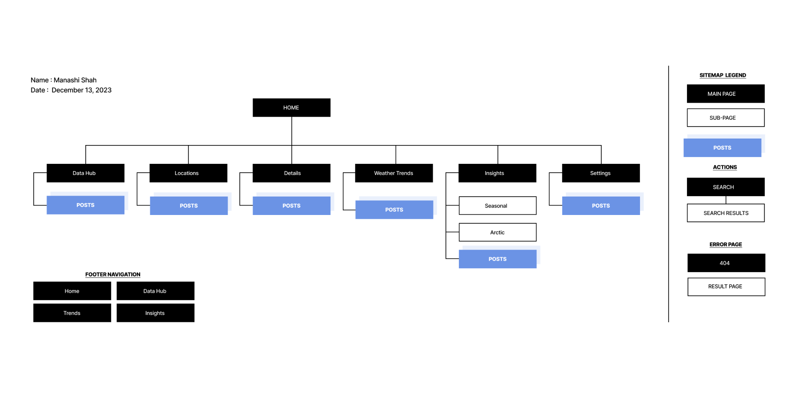
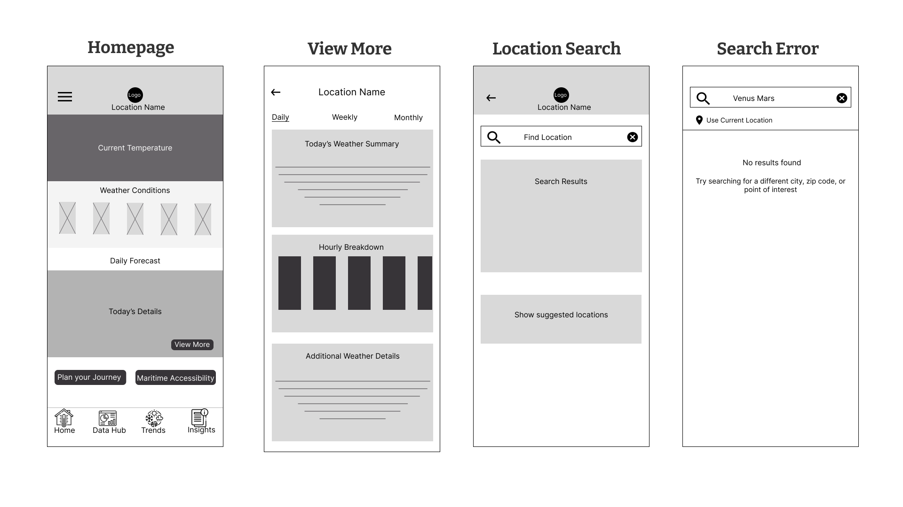
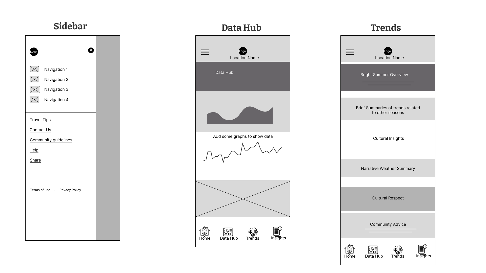
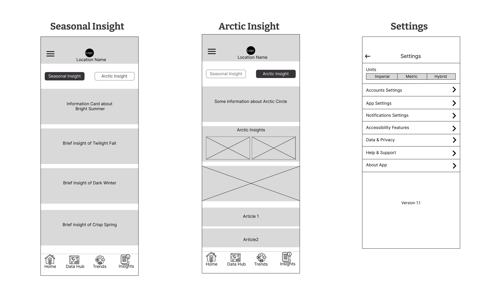
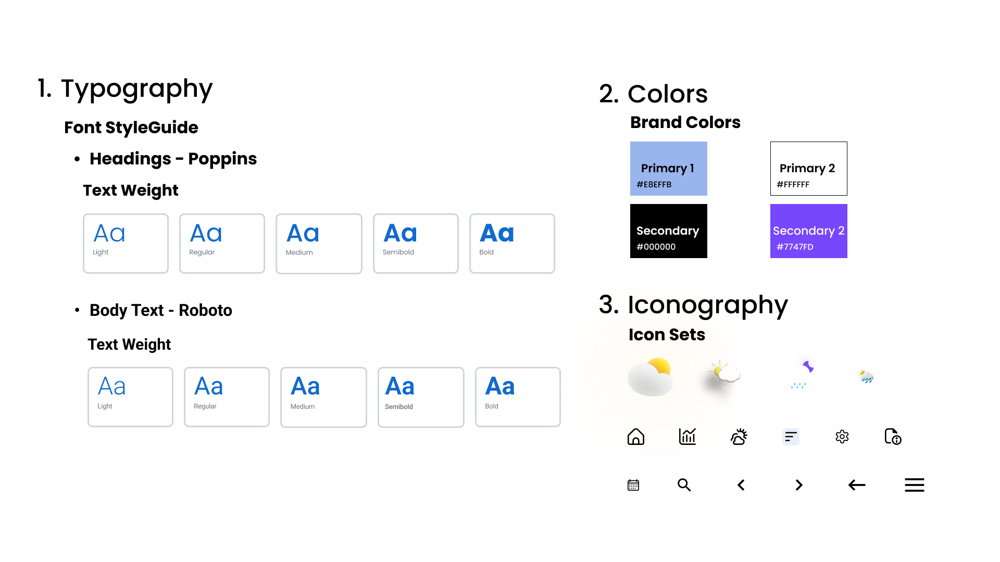
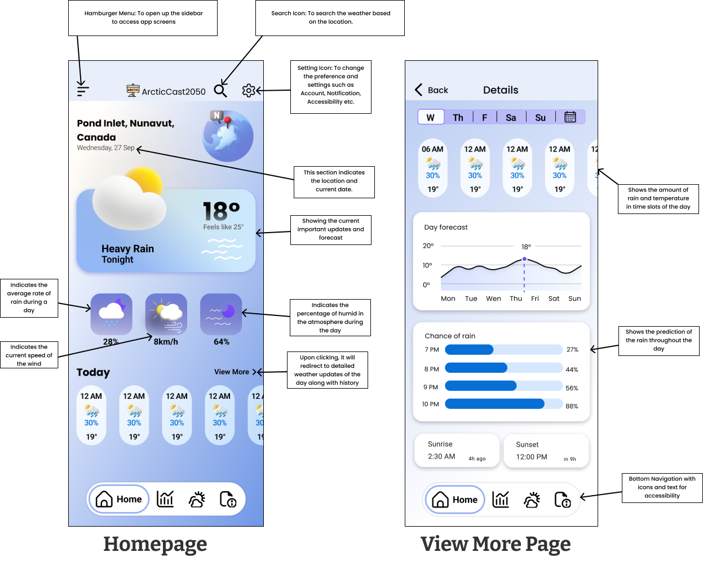
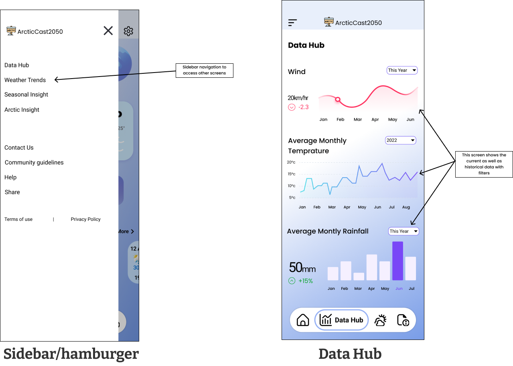
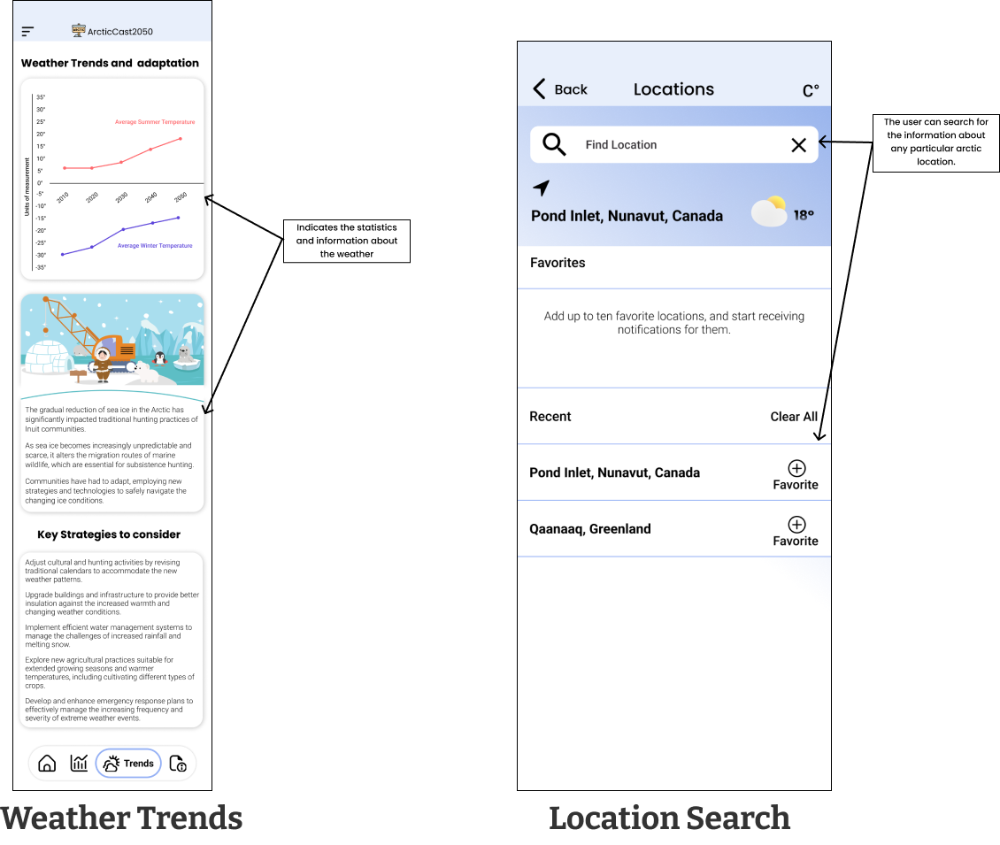
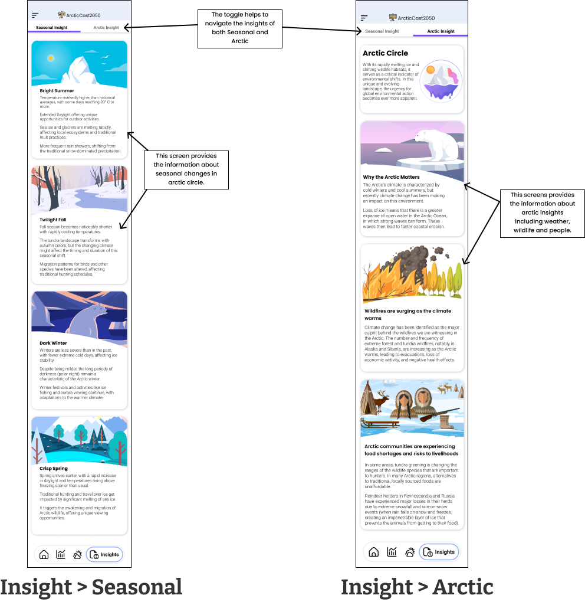
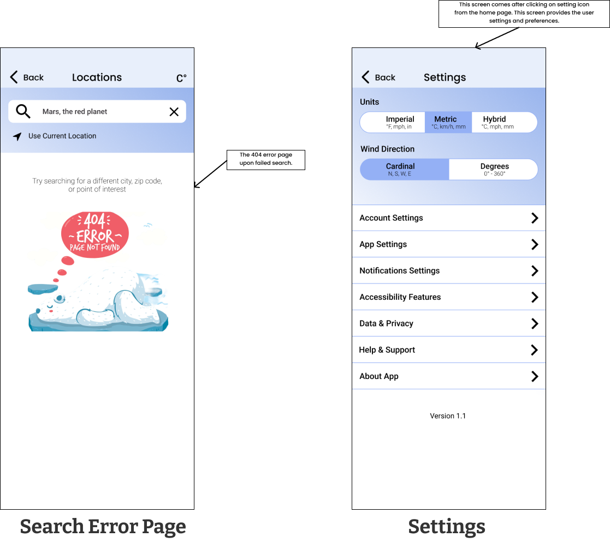

Case Study: Arctic Cast 2050
Project Overview
Arctic Cast 2050 is a forward-looking weather application designed for the Arctic Circle region, encompassing parts of Canada, Norway, Russia, and Greenland. Aimed at the year 2050, this project takes into account the significant environmental changes anticipated due to climate change, making it a blend of existing realities and thoughtful speculation.
Duration : 3 weeks
Role : UX/UI Designer, Researcher
Tools Used : Figma, Adobe Stock
Objective
The primary goal was to create an engaging and informative weather application that reflects the drastic climatic shifts expected in the Arctic Circle by the year 2050. By focusing on this region, the project aimed to raise awareness about the urgent environmental issues it faces and offer a glimpse into the future of our planet.
Research
The research phase of Arctic Cast 2050 combined an in-depth analysis of climate projections for the Arctic Circle with a targeted understanding of user needs, laying the groundwork for a uniquely informative and user-friendly weather app. By delving into scientific literature on expected environmental changes by 2050 and engaging directly with potential users through surveys and interviews, the project identified key design priorities that address both the urgent message of climate change and the practicalities of daily weather information. This comprehensive approach ensured the app not only presents scientific data in an accessible manner but also resonates with a diverse audience, making Arctic Cast 2050 a pivotal tool for awareness and education on the future of the Arctic environment.
Persona #1 The Arctic Researcher
Dr. Emily Nguyen
Age: 38
Occupation: Climate Scientist
Education: Ph.D. in Climate Dynamics
Challenges & Pain points
- Quick access to and comparison of historical and present climate data.
- Instant alerts on climate changes and wildlife movements.
- User-Friendly interpretation of climate data
- Easily obtaining summarized reports of climate data for quick analysis
Bio
Emily is a dedicated climate scientist with over a decade of experience researching climate patterns in the Arctic. She values precision and reliability in data to inform her research and publications. Outside of her research, she advocates for climate change awareness through public speaking engagements.
"To understand the future, we must synthesize the past and present climate narratives."
Personality Traits
Detail-OrientedConscientiousAnalytical
Goals & Motivations
- Utilizing the latest technology for in-depth climate analysis and research.
- Seeking the ability to quickly analyze climate trends and patterns through concise, pre-generated reports.
- Aiming to make complex climate data easily understandable for both herself and the broader public.
User Flow #1
User Flow for Dr. Emily Nguyen, 38
Task: Streamlined Climate Data Access and Analysis
Persona #2 The Local Inuit Community Member
Aputi Anana
Age: 52
Occupation: Community Leader
Education: Local Education & Traditional Knowledge
Challenges & Pain points
- Integrating local weather forecasts with traditional knowledge for cultural activities.
- Documenting the impact of climate change on traditional lifestyles and sharing these narratives.
- Adapting community event planning to unpredictable weather patterns.
Bio
Aputi is a respected elder and leader in his Inuit community. He is deeply rooted in his culture and is actively involved in the preservation of traditional ways of life. Aputi is often sought for advice and is keen on integrating modern tools to support his community.
"Our traditions are our roots; understanding the winds of change helps us to grow."
Personality Traits
EmpatheticResourcefulTradition-oriented
Goals & Motivations
- To preserve Inuit cultural heritage by adapting to and understanding climate impacts.
- To foster community engagement and intergenerational knowledge transfer.
- To ensure the continuity of traditional events through smart weather-based planning.
User Flow #2
User Flow for Aputi Anana, 52
Task: Integrating Weather Forecasts into Community Planning
Persona #3 The Adventure Tourist
Jack Harper
Age: 27
Occupation: Travel Blogger
Education: B.A. in Environmental Studies
Challenges & Pain points
- Finding reliable and up-to-date weather information for remote Arctic locations.
- Planning safe travel itineraries amid variable and extreme Arctic weather conditions.
- Locating educational content that is both engaging and scientifically accurate.
- Curating content that balances adventure with education and environmental awareness.
Bio
Jack is an adventurous travel blogger who specializes in eco-tourism. He is passionate about exploring remote places and sharing his experiences with his audience. He has a strong following online and is always looking for the next adventure that can educate and inspire.
"Every destination has a story, and I want to tell it through the lens of respect and wonder."
Personality Traits
CuriousSocially ConsciousAdventurous
Goals & Motivations
- To explore the Arctic responsibly while maintaining safety and environmental integrity.
- To become a resource for other adventure enthusiasts through informative content.
- To contribute to climate awareness and sustainable travel practices.
- To enrich his travel experience by connecting with local cultures and learning from them.
User Flow #3
User Flow for Jack Harper, 27
Task: Simplified Arctic Exploration and Learning

Site-Map - Arctic Cast 2050
Low Fidelity Wireframes
  Style Guides
Design Mock-Ups
    Key Takeaways
- Deepened my understanding of the Arctic's environmental changes, particularly how they signify global warming's impact.
- Expanded my view on global environmental issues, recognizing the Arctic's significant role in demonstrating these challenges.
- Improved my research and analytical skills, enabling more effective gathering and presentation of information.
- Developed technical skills and creative problem-solving abilities through designing the app, applying theoretical knowledge in a practical context.
To Improve
- Improve time management to better handle multiple projects and avoid rushing, which impacted the quality of my work.
- Due to poor time management, I couldn't develop a strong design system for the app, something to focus on in future projects.
- Learn to incorporate feedback more regularly and use it to refine and improve my projects.
- Strive to balance detailed research with a wider understanding of all aspects of a project for a well-rounded approach.